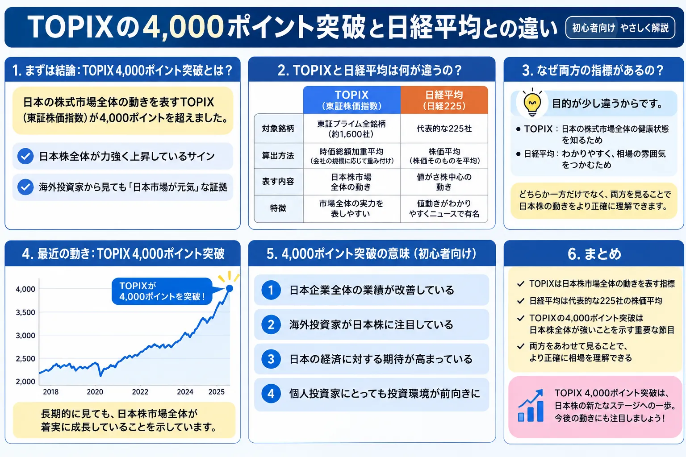

話題・トレンド
TOPIXとは？史上初の4,000ポイント突破で注目される理由を初心者向けに解説
TOPIXが史上初めて4,000ポイント台へ到達し、日本株市場の節目として注目されました。ただし、4,000ポイントは4,000円という意味ではなく、すべての日本株が一斉に上昇したことを示す数字でもありません。この記事では、TOPIXの基本、日経平均株価との違い、新NISAや投資信託との関係を初心者向けに整理します。
Basic
TOPIXとは？日本株市場の幅広い動きを表す指数
TOPIXは「Tokyo Stock Price Index」の略称で、日本語では東証株価指数と呼ばれます。日本取引所グループの指数算出会社が公表している、日本株市場を代表する株価指数の一つです。

役割
日本株市場の全体像を見る
特定の一社ではなく、幅広い銘柄の値動きをまとめて示します。日本株市場が全体として強いのか弱いのかを見る材料になります。
算出方法
浮動株時価総額加重型
市場で実際に流通しやすい株式を考慮した時価総額をもとに算出します。そのため、時価総額の大きい企業ほど指数への影響も大きくなります。
投資方法
指数そのものは直接買えない
TOPIX自体を直接購入するのではなく、TOPIXへの連動を目指すETFや投資信託を通じて投資する方法があります。
- TOPIXの単位は「円」ではなく「ポイント」です。
- 対象銘柄は市場区分や指数ルールの見直しにより変更されることがあります。
- TOPIXは日本株投資の運用成績を比べるベンチマークとしても使われます。
Index Level
4,000ポイントとは何を意味する？
TOPIXの4,000ポイントは「株価が4,000円になった」という意味ではありません。TOPIXは、1968年1月4日の対象市場の時価総額を100として、その後の時価総額の変化を指数化しています。
基準日の100に対して、現在の水準を示す
単純化して考えると、4,000ポイントは基準日の100に比べて、対象となる株式の時価総額が大きく拡大した水準を表します。ただし、指数の連続性を保つための調整が入るため、「時価総額がそのまま40倍」とだけ理解するのは正確ではありません。
浮動株比率や銘柄変更も調整される
新規上場、上場廃止、増資、株式分割、構成銘柄の変更などで指数が不自然に動かないよう、基準時価総額が調整されます。TOPIXは市場の値動きを継続的に比較できるよう設計された指数です。
- 2026年6月3日、TOPIXは取引時間中に史上初めて4,000ポイント台へ乗せました。
- 2026年6月17日、終値4,013.23ポイントとなり、終値でも初めて4,000ポイントを突破しました。
- 7月に入っても4,000ポイント前後の高い水準が続き、改めて注目されました。
※「取引時間中の初突破」と「終値での初突破」は日付が異なります。本記事では両者を区別しています。
Background
なぜTOPIXの4,000ポイント突破が注目された？
最も分かりやすい理由は、算出開始以来初めての水準へ到達したことです。ただし、上昇の背景を一つの材料だけで説明することはできません。
幅広い日本株の動きを見る材料になる
TOPIXは日経平均より対象が広いため、日経平均だけでは見えにくい銀行、商社、自動車など大型株の動きも反映されやすい指数です。
日本企業の時価総額拡大を示す節目
株価上昇により、TOPIXの対象企業全体の時価総額が高い水準へ達したことを示すため、日本株市場の長期的な変化を考える節目になります。
複数の相場材料が重なっている
企業業績、円相場、国内外の金利、海外投資家の売買、株主還元、政策期待など、複数の要因が市場評価に影響します。
日経平均との動きの違いにも注目が集まる
日経平均が一部の値がさ株に強く動かされる場面では、TOPIXと比較することで上昇が市場全体へ広がっているかを考えやすくなります。
株価が動く基本的な仕組みを先に確認したい方は、株価はなぜ上下するのか？も参考になります。また、為替や金利も日本株の評価に影響するため、円安とは？、金利上昇とは？もあわせて確認すると背景を整理しやすくなります。
Compare
TOPIXと日経平均株価の違い
TOPIXと日経平均株価は、どちらも日本株市場を代表する指数ですが、対象銘柄と算出方法が異なります。そのため、同じ日に異なる値動きをすることがあります。
| 比較項目 | TOPIX | 日経平均株価 |
|---|---|---|
| 算出元 | 東京証券取引所 | 日本経済新聞社 |
| 単位 | ポイント | 円 |
| 算出方法 | 浮動株時価総額加重型 | 株価平均型 |
| 対象 | 日本株市場の幅広い銘柄 | 選定された225銘柄 |
| 影響が大きい銘柄 | 時価総額の大きい銘柄 | 株価水準の高い銘柄 |
TOPIXの特徴
幅広い銘柄を対象としますが、時価総額の大きい企業の影響を受けやすい指数です。
日経平均の特徴
225銘柄で構成され、株価水準の高い「値がさ株」の値動きが指数へ大きく影響します。
両方を見る理由
算出方法が違うため、二つを比べると日本株市場の上昇が一部銘柄中心か、より広い範囲かを考えやすくなります。
どちらか一方が必ず優れているわけではありません。日経平均が高値圏にあるときの考え方は、日経平均7万円時代に新NISAを始めても遅い？でも初心者向けに整理しています。
Market Breadth
TOPIXが上がれば日本株全体が好調と言える？
TOPIXが上昇していると、日本株市場全体が強い印象を受けます。しかし、すべての銘柄が上昇しているとは限りません。
大型株だけが指数を押し上げる場合がある
時価総額の大きい企業が上昇すると、指数全体への影響も大きくなります。その一方で、小型株や一部業種が下落していることもあります。
値上がり銘柄数や業種別指数も確認する
市場の広がりを見るには、値上がり銘柄数、値下がり銘柄数、東証33業種別指数なども参考になります。指数の上昇がどこまで広がっているかを確認できます。
指数の最高値と自分の損益は別
TOPIXが最高値でも、自分が保有する銘柄や投資信託が同じように上昇するとは限りません。投資対象、購入時期、比率によって損益は変わります。
NISA & Funds
TOPIXと新NISA・投資信託・ETFの関係
TOPIXそのものを直接購入することはできませんが、TOPIXへの連動を目指すETFや投資信託があります。日本株へ幅広く分散投資する方法の一つです。
TOPIX連動型
幅広い日本株へ分散しやすい
一つの商品を通じて、多数の日本企業へ分散投資する形になります。個別株より企業固有の影響を分散しやすい点が特徴です。
日経平均連動型
構成と値動きが異なる
日経平均連動型は225銘柄を対象とし、TOPIX連動型とは銘柄構成や影響の大きい企業が異なります。
商品選び
指数名だけで選ばない
信託報酬、売買コスト、純資産総額、連動対象、分配方針などを確認する必要があります。
基本から確認する場合は、投資信託とは？、ETFとは？、新NISAとは？を先に読むと整理しやすくなります。
- TOPIXが最高値を更新したことだけを理由に商品を選ばないことが大切です。
- 長期投資では、短期的な指数水準だけでなく投資期間と積立方針を確認します。
- 一括投資が不安な場合は、資金を分けて投資する考え方もあります。
投資期間については長期投資とは？、資金の入れ方については一括投資と分割投資の違いとは？も参考になります。
Caution
初心者がTOPIXを見るときに注意したいこと
4,000ポイントという大きな数字や最高値のニュースを見ると、買い遅れへの不安や下落への恐怖を感じやすくなります。指数は判断材料の一つとして、落ち着いて見ることが大切です。
-
最高値更新を見て焦って一括投資しない
高値更新後も上昇が続く場合もあれば、利益確定売りで下落する場合もあります。ニュースだけで投資額を急に増やさないようにします。
-
4,000ポイントを割っただけで暴落と考えない
節目を下回っても、下落率が小さければ通常の値動きの範囲であることがあります。数字の桁ではなく変動率や期間も確認します。
-
TOPIXと日経平均の両方を見る
二つの指数を比べると、一部の大型値がさ株だけが動いているのか、幅広い銘柄へ上昇が広がっているのかを考えやすくなります。
-
金利・為替・企業業績も確認する
株価指数は企業業績だけでなく、国内外の金利、円相場、海外市場、投資家心理など複数の要因で動きます。
-
短期ニュースで新NISAや積立方針を変えない
長期の資産形成では、日々の高値・安値よりも、無理のない投資額、分散、継続できる期間の方が重要です。
Related
あわせて読みたい関連記事
FAQ
TOPIXに関するよくある質問
-
TOPIXとは簡単にいうと何ですか？
TOPIXは東証株価指数のことで、日本株市場の幅広い銘柄の値動きを表す代表的な株価指数です。浮動株調整後の時価総額をもとに算出されます。 -
4,000ポイントは4,000円という意味ですか？
いいえ。TOPIXの単位は円ではなくポイントです。基準日の時価総額を100として、市場全体の時価総額がどの程度変化したかを表します。 -
TOPIXと日経平均は何が違いますか？
TOPIXは幅広い日本株を対象とする浮動株時価総額加重型の指数です。日経平均株価は選定された225銘柄を対象とする株価平均型の指数で、対象銘柄と算出方法が異なります。 -
TOPIXが上がれば、すべての日本株が上がっていますか？
すべての日本株が上昇しているとは限りません。時価総額の大きい銘柄が指数を押し上げる一方で、小型株や一部業種が下落している場合もあります。 -
TOPIXが最高値なら、今から投資するのは遅いですか？
最高値だけで遅いと決めることはできません。投資期間、目的、資金状況、分散方法を確認し、短期的な指数水準だけで判断しないことが大切です。 -
新NISAでTOPIXへ投資できますか？
新NISAの対象商品には、TOPIXへの連動を目指すETFや投資信託があります。ただし、対象枠や取扱商品は金融機関によって異なるため、商品情報と公式案内を確認してください。
Summary
まとめ｜TOPIXは日本株市場の広い動きを見るための指数
- TOPIXは、日本株市場の幅広い動きを表す株価指数です。
- 4,000ポイントは4,000円ではなく、指数の水準を意味します。
- 日経平均とは、対象銘柄と算出方法が異なります。
- TOPIXが上昇しても、すべての銘柄が上昇しているとは限りません。
- 初心者はTOPIXと日経平均の両方を見ると、市場の動きを理解しやすくなります。
- 最高値だけを理由に、慌てて売買しないことが大切です。
Next Step
日本株の基礎を確認してから、証券会社を比較する
指数の意味を理解したうえで、国内株・投資信託・新NISAなど、自分が利用したい商品に対応する証券会社を比較しましょう。
一般ユーザー目線の体験でおすすめの会社をご紹介

ご利用にあたっての注意事項
本記事は情報提供を目的としており、投資の勧誘や特定の商品・銘柄の推奨を目的としたものではありません。株式・ETF・投資信託等の取引は元本保証がなく、相場変動等により損失が生じる場合があります。指数の構成や制度、商品の取扱条件は変更される場合があるため、取引開始前に日本取引所グループ、金融庁、各金融機関の公式情報、契約締結前交付書面、目論見書等を必ずご確認のうえ、ご自身の判断と責任でお取引ください。